This guide provides step-by-step instructions to assist InsuranceNow developers in setting up a development environment. The setup specifically targets systems running Amazon Corretto JDK 11 with IntelliJ IDEA on Microsoft Windows.
Follow this guide to ensure you have all components installed correctly to begin development effectively.
Overview
This guide is intended for InsuranceNow developers. It describes how to develop InsuranceNow products that run on Amazon Corretto JDK 11 with IntelliJ IDEA on Microsoft Windows. Note: InsuranceNow does not officially support any specific IDE for development. Guidewire uses IntelliJ for its own internal use.
It contains the following parts:
Pre-installation requirements
Installing or upgrading MySQL
Cloning the source code
Installing and configuring IntelliJ IDEA
Starting the InsuranceNow Server
Additional configuration tasks and guidelines Note: This guide assumes your environment is running 64-bit Windows 7 or Windows 10.
We have come to find out that getting started with GW isn't always intuitive, we have set aside our own internal documentation on how to get up and running.
While taking the GW training you will be supplied with a myriad of PDFs, this document was inspired by DevelopersGuide_Java11
Installation steps
These steps are curated from the team, that was tasked to make sense of the setup guide since GW lacks providing context and organized steps to installation. The installation guide also assumes that we can download any dependency without the need of Infrastructure's credentials(this will go away once we set up IAM). The hope of this guide is to get you up and running faster and give you something to do once you complete Mock Implementation. So yes, the steps are to create your GitHub account in the correct format, to install the correct version of MySQL and Workbench, clone our repo, install IntelliJ, running INow Server. Let's Begin, Shall We?
Step 1 - Create GitHub Account
First step is fairly painless, go to GitHub and click the Sign Up button. There you will run through the welcome to GitHub workflow and click Complete setup Go on and verify your @priscorp.net email address and any MFA you need to set up. Here is the template of naming convention from GW:
Email address: ablock@priscorp.net, abhatia@priscorp.net, ewiegand@priscorp.net Department / Manager: Project Manager / Jill Jackson
Project: pris-spi
You can send this to Aidan, Shayan, Aastha or myself and we will open up a SalesForce Case(SFC) to have GW give you access
Notify team members (Aidan, Shayan, Aastha, or manager) after account creation. A SalesForce Case (SFC) will be opened to ensure your account is granted appropriate GW access.
1.1. SFC - SalesForceCase
Once you are signed up with GPass, you should have access to Guidewire community to see your case opened up to provide access.
This time varies on which it takes for them to get back to you so, be prepared to keep yourself occupied, im pretty sure we did some self learning or went off to Coding Bat
Step 2 - Install Git and Install Corretto
Here is where you will want to make two directories on your C:/workgit - this is where you will install git if not installed already You can verify that git is working by git --version
This is where our project repo will basically live, and your directories should look something like this
Installing Corretto
Ok so you are going to make another directory in the "C:/innovation/a" this is where corretto will be extracted to when you get the link.
Please let one of the devs know that you will be needed access to the offline-repo and we will approve
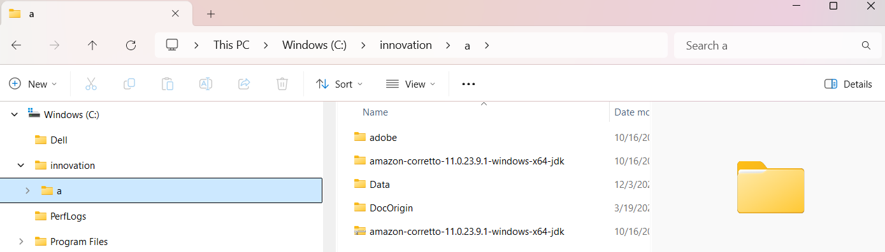
Setting Env Variables
You want to unzip that and extract Corretto to c/innovation/a.
Set up the Java Home variable and Path System Variable in your computer
Open System Properties > Environment Variables.
In User variables and System variables, set JAVA_HOME to the Corretto path.
For example, specify C:\innovation\a\amazon-corretto-11.0.10.9.1-windows-x64-jdk\jdk11.0.10_9.
Under User variables, set the PATH: JAVA_HOME\bin;
Under System variables, add JAVA_HOME\bin; to the beginning of the PATH.
Edit the Path system variable and verify that the Corretto 11 JDK is at the top of the list.
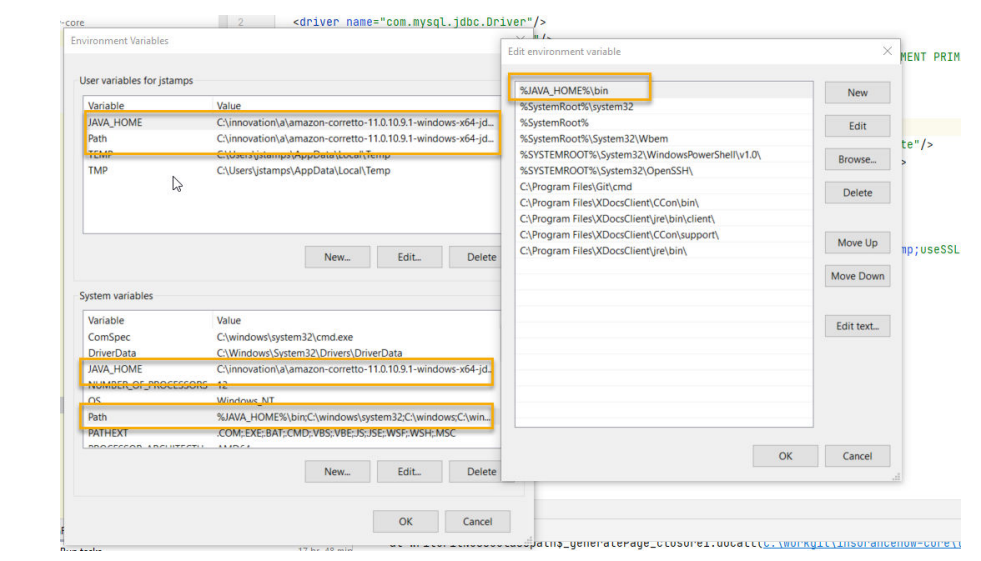
Step 3 - Install MySQL and MySQL Workbench
Configuration options
Install MySQL to MySQL 8 on your computer. Unless otherwise specified in the following steps, use the default settings during the installation or upgrade. Install MySQL Database Server 8.0 and Workbench tools
• Do not install a higher or lower version of MySQL. • If you create a different root password than the default innovation!
Procedure
Download the MySQL Community Database Server 8 installer MSI (not the ZIP Archive) from https://dev.mysql.com/downloads/installer/ and save it to your C: drive. Use the mysql-installer-web-community-8.0.33.0.msi executable, not
Start the installer.
In Choosing a Setup Type, accept the Developer Default setting and then click Next. This option includes MySQL Workbench and other useful tools.
In Check Requirements, click Execute to install and resolve all the automatic requirements for MySQL. Run Execute first; do not click Next. Install or upgrade MySQL 13 Note: You can safely ignore the Microsoft Excel, Visual Studio, and Python manual requirements.
When you finish installing all the automatic requirements, click Next.
In Download, review the products to install and then click Execute to download MySQL Server, Workbench, and so on.
When you finish downloading the MySQL products, click Next.
In Installation, click Execute to install the products.
When you finish installing the MySQL products, click Next.
In Installation Complete, click Finish.
In Product Configuration, click Next.
In Type and Networking, click Next.
In Accounts and Roles, set the MySQL Root Password to innovation!. You do not need to add a user on this window.
Click Next to continue with the configuration.
In Windows Service, verify that MySQL to run as a Windows Service is set, using the default settings, and then click Next.
In Apply Configuration, click Execute to proceed with the installation.
Make sure all steps are successful, and then click Finish.
In Product Configuration, click Next.
In Connect Server: a. Enter the root password (innovation!). b. Click Check to make sure the connection succeeds. c. Click Next.
In Apply Configuration, click Execute to apply all your changes.
Click Finish.
In Product Configuration, click Next to configure your server.
In Installation Complete, click Finish to start MySQL Workbench. Upgrade MySQL to version 8.0.33 Upgrading the developer environment to version MySQL 8.0.33 (or higher) is required for users on the following versions or higher
2023.1.2 (Garmisch)
2022.2.9 (Flaine)
2022.1.14(Elysian)
2022.2.9 (Flaine)
2022.1.14 (Elysian)
This topic includes high level instructions for migrating your existing schemas and upgrading MySQL on your developer machine to version 8.0.33. This document assumes you are running MySQL version 5.7. Information and steps in this section are applicable to Windows users only. Note: The steps outlined below do not cover all possible variables for upgrading all installations. Additional permissions or other settings may be required to perform the upgrade. For more information, refer to the Upgrading MySQL section of the MySQL 8.0 Reference Manual.
Upgrading to 8.0.33*
Disregard if you already have the current version installed.
Download the mysql-installer-web-community-8.0.33.0.msi installer at https://dev.mysql.com/downloads/ windows/installer/8.0.html. Guidewire InsuranceNow JDK.11.x Developer Setup Guide 14 Install or upgrade MySQL
Stop any running InsuranceNow instances.
Using MySQL workbench, perform a data export on all database schemas you are actively using. For example: custPRIS, custPRIS_dw, custPRIS, custPRIS_dw, and so on.
Stop the v5.7 MySQL instance.
Open the installer and install MySQL v8.0.33 (or higher) Note If the installer opens a version other than 8.0.33 for any component (for example, MySQL Server), uninstall the version shown, then reinstall MySQL version 8.0.33.
Set the root user and java user with the standard InsuranceNow credentials.
When the update is completed, validate that the MySQL80 service is running.
Choose one of the following options:
• Restore your database from backup (exported in step 3). Note If an Unknown Database error occurs while importing, create the database.
• Change the data directory by locating the "my.ini" config file, and updating the datadir to 5.7. For example: c:\ProgramData\MySQL\MySQL Server 5.7\Data
In the "my.ini file", disable bin logging. For example: {[mysqld]skip-log-bin}.
Remove the useSSL=false connection parameter from the jdbc:mysql URL in jdbc*.xml and other files where it exists. It is deprecated in version 8 and continuing to use it may prevent connections.
Restart the MySQL service and InsuranceNow instance. Create the database instances About this task Make sure that your database instance matches the name you create in these steps. For more information, see “DBCP connection pool”.
Create Database Instances
Procedure
In MySQL Workbench, double-click the new connection to connect to it.
Enter the root password (by default, innovation!).
In the query window, enter CREATE DATABASE pris-spi; and then click the execute icon. Include the semicolon in the query.
Enter ALTER DATABASE custPRIS CHARACTER SET latin1 COLLATE latin1_general_ci; and then click the execute icon.
Enter CREATE DATABASE custPRIS_dw; and then click the execute icon.
Enter ALTER DATABASE custPRIS_dw CHARACTER SET latin1 COLLATE latin1_general_ci; and then click the execute icon.
Create a Java User
The Java user is necessary to run the gradlew resetDB or gradlew build commands without including additional parameters. Before you begin If you have a working MySQL database, but you do not have a Java user in your build-out, creating the Java user is not optional. Guidewire InsuranceNow JDK.11.x Developer Setup Guide Install or upgrade MySQL 15
Procedure
Create a Java User
In the Navigator (left) panel of MySQL Workbench, click the Administration tab at the bottom of the panel.
In the Management section, click Users and Privileges.
In the User and Privileges panel, click Add Account.
In the Login tab, enter the following settings:
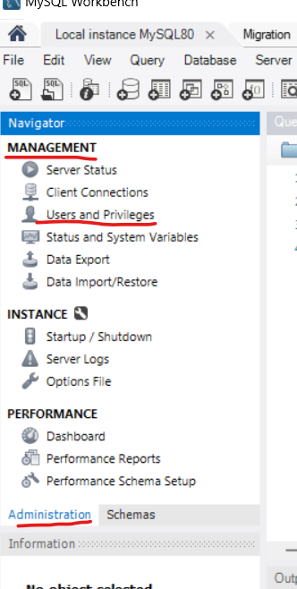
Login Name: java Password: kaffe9 Limit to Hosts Matching: %
On the Administrative Roles tab, select the following roles:
MonitorAdmin
DBManager
DBDesigner
BackupAdmin
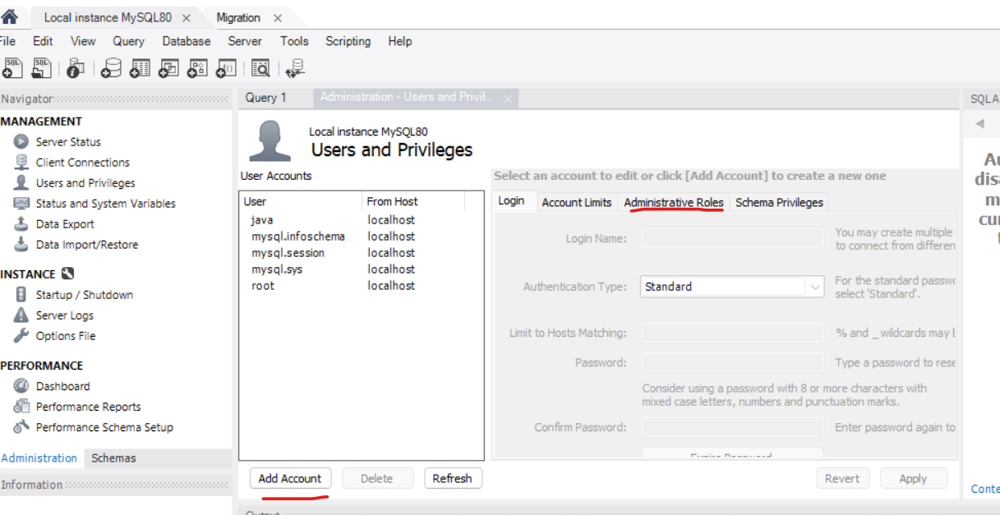
Click Apply.
Update the database server
In the Navigator panel, click the Administration tab.
In the Instance section, click Options File.
In the Options File panel, click the Networking tab.
Change the value of max_allowed_packet to 50M.(Keep Infrastructure just in case you needs credentials)
Click Apply.
If prompted again, click Apply to save your changes.
Exit the MySQL Workbench.
RedShift access
It is going to be a good idea to install DBeaver so that you can connect to GW Redshift instances after you configure MySQL
Good to Knows
This is going to take a second, GW needs to ensure that you passed mock implementation, then they will send you a Link via email
it will look something like this
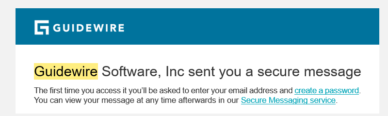
once you are in Dbeaver you are going to need configure connection to those instances and that's where these two Uris come in:
Open a Git Bash Window and change directories to workgit(e.g. cd /c/workgit)
use command git clone to clone repo from GitHub
IMPORTANT: If you clone to a different directory or rename the repository directory later (for example,
from (iic-spi to pris-spi), make sure that the repository directory name either starts with the prefix custPRIS or ends with suffix -spi. If it does not, you experience MDA ordering problems and the application does not run properly
This is where the offline-repo comes into play. You will more than likely get this from one of the other devs.
Take the offline-repository.zip and extract to workgit.
offline repository is just the source code to InsuranceNow.
Install IntelliJ
Make sure that you are installing the community version
Another good tool is using Jet Brains ToolBox there you can install any community version without having to source the executable
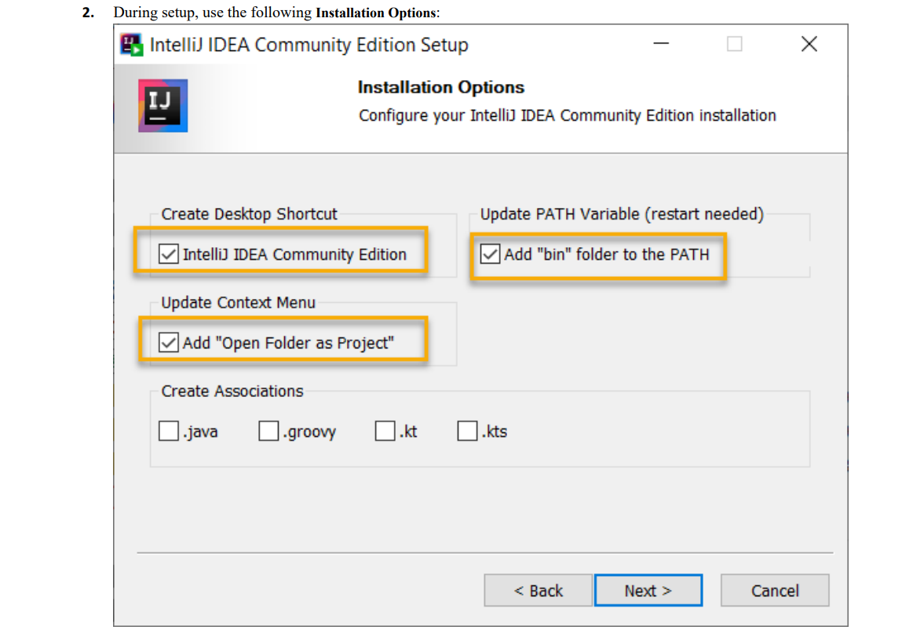
Reboot your computer after the installation has finished.
Start IntelliJ. Wait until IntelliJ has completely finished indexing before you start any configuration. It takes several minutes to completely open the import and index the project after you open it. Note: Do not import the settings.
Click File > New > Module from Existing Source and navigate to the build.gradle file of your project and then click OK. For example, if you were running pris-spi, navigate to C:\workgit\pris-spi\build.gradle.
Select Open as Project.
If prompted, select Trust Project and then open the project in This Window. Gradle builds your project.
If you see that the Memory Settings are too low during the build, perform the following steps: a) In the Event Log, click the Memory Settings link.
b) Set the Maximum Heap Size to 10000 MB.
Note: This setting depends on how powerful your computer is. If you are low on memory, try 4096 or 2048 MB.
c) Click Save and Restart.
You can also modify the memory settings by selecting Help > Change Memory Settings. Note: The settings are added to the C:\Users\username\AppData\Roaming\JetBrains
\IntelliJIdea2020.3\idea64.exe.vmoptions file.
Configure the IntelliJ Project Structure
Configure the Project Structure to use the correct Project SDK, especially if this is the first time you used IntelliJ.
About this task
If you do not set the SDK, you cannot build the project.
Procedure
Start IntelliJ if it is not already started after you applied the memory settings.
Select File > Project Structure > Project.
Under Project SDK, review the Project SDK. If necessary, click the pull-down menu and browse to the detected Amazon Corretto 11 SDK installed in the innovation directory.
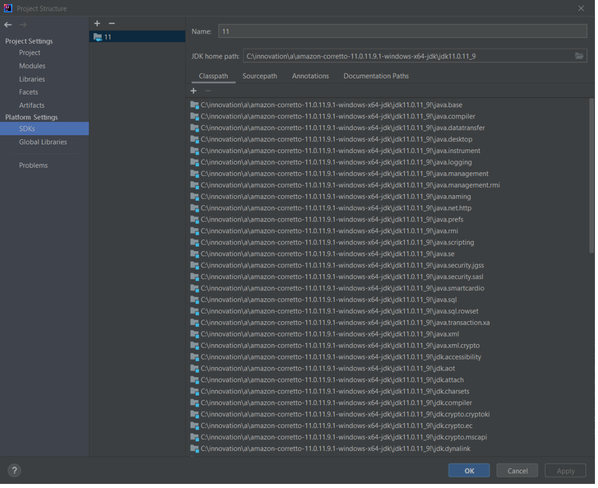
Configure Gradle Settings
Configure the Gradle settings to use the correct JVM. About this task If you do not set the Amazon Corretto 11 JVM, you cannot build the project.
Under Build and run, select IntelliJ IDEA instead of Gradle (Default).
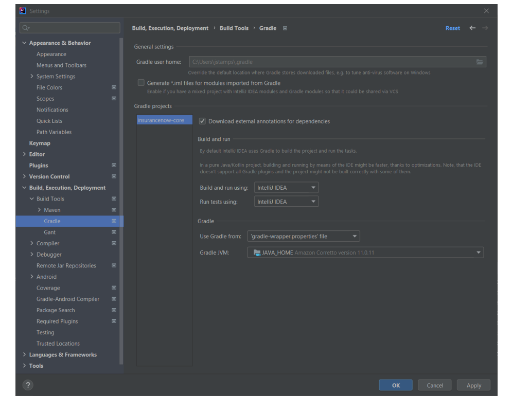
In Gradle JVM, select JAVA_HOME. Here you are using the JDK 11 you installed previously.
Click OK to close the Settings window.
Expand the Gradle panel and then refresh the Gradle project.
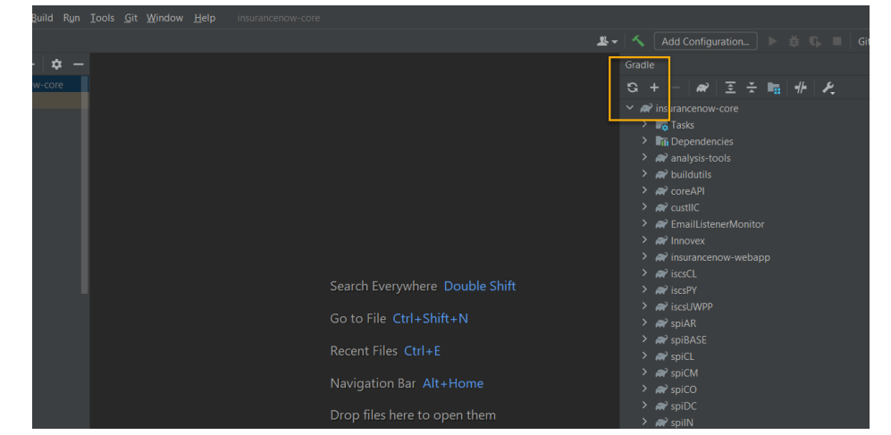
Configure the DBCP Connection Pool
Start the InsuranceNow Server
Initialize DB
If you did not initialize your database during setup, initialize the database now before you can start using InsuranceNow.
About this task
Note: For non-Gradle environments, see “Use SecurityInit to initialize the database” on page 35. When you initialize your database, the system drops all the tables that you select and recreates empty tables. Note: You only need to perform this step once.
Click the resetDB task to initialize the database.
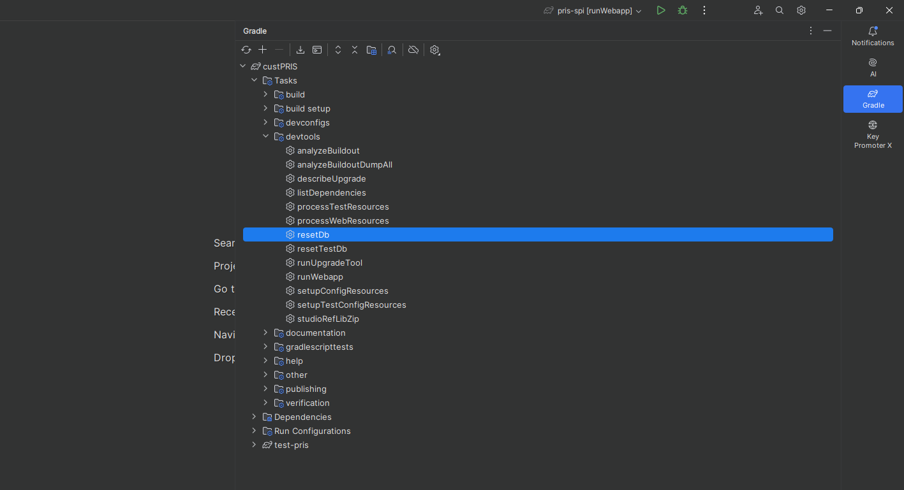
Create a Run Configuration to start the server
• “Initialize your database.”
• Reset your configuration by expanding Gradle > custPRIS > custPRIS > Tasks > devtools > setupConfigResources before you start
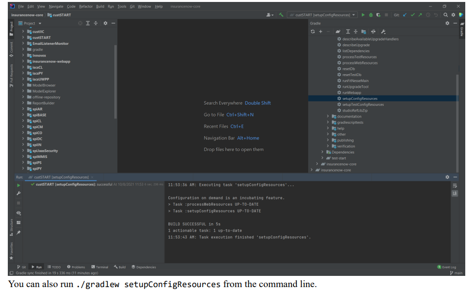
About this Task
You follow essentially the same steps for any InsuranceNow server (for example, custABC). Make sure that your completed Run Configuration resembles the following:
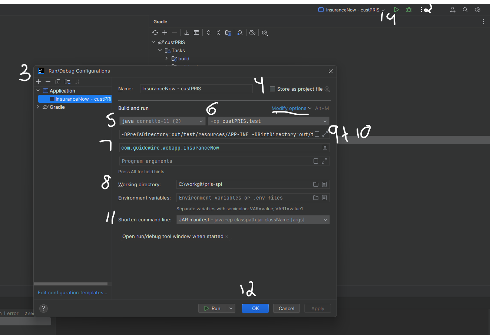
Open IntelliJ.
Select Run > Edit Configurations.
Click the + sign and then select Application from the list to add a new application configuration.
In Name, enter the name of the application, for example, InsuranceNow - custPRIS.
If the module is not specified, select Java Corretto 11.
In Use classpath of module, select custPRIS.test. If you select custPRIS.main, you see compilation because \out\test was not created.
In Main class, search for InsuranceNow and select InsuranceNow (com.guidewire.webapp.InsuranceNow).
Make sure that custPRIS is the working directory. For example: C:\workgit\insurancenow-core\custPRIS
Click Modify Options and a) Select Add VM Options. b) Select Add dependencies with "provided" scope to classpath. c) Select Shorten Command Line.
In the VM Options field, add the following parameters to run custPRIS on ports 9090 and 9443: -DPrefsDirectory=out/test/resources/APP-INF
-DBirtDirectory=out/test/resources/birt-viewer
-DIN_PORT=9090
-DIN_HTTPS_PORT=9443
From Shorten Command Line, select JAR manifest.
Click OK.
Reset your configuration by selecting Gradle > cust > custPRIS > Tasks > devtools > setupConfigResources. You can also reset the configuration by running ./gradlew setupConfigResources before you start.
In the main Intellij window, select InsuranceNow - custPRIS from the drop-down list and then click Run to start InsuranceNow. image to start project
Start the server as a Gradle Task
You can start the server with Gradle
If you do not see the Gradle tool button on the right side of the IntelliJ IDE, expand View > Tool Buttons > Gradle to add it.
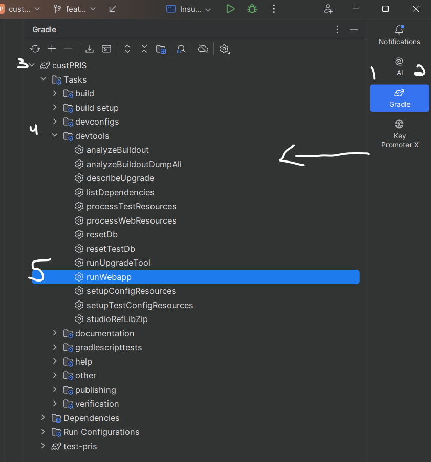
Click Gradle. The Gradle projects pane appears.
Expand the custPRIS module.
Expand Tasks > devtools to view the available tasks inside the module. Each module contains different Gradle tasks. Not all Gradle tasks apply to all modules.
Right-click runWebApp and select Modify Run Configuration.
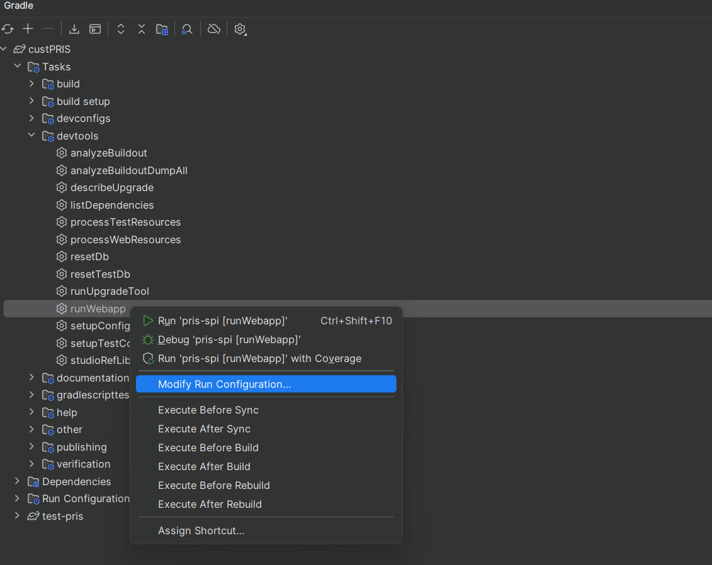
In the VM Options field, add the following parameters to run custPRIS on ports 9090 and 9443: